Si spiega in due minuti
38 giochi che si spiegano in due minuti: si comincia a giocare quasi subito.
-
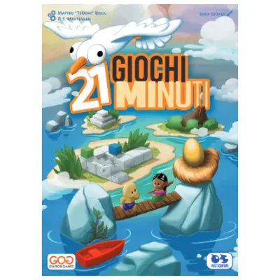
21 Giochi Minuti
Ventuno giochi diversi in un'unica scatola, ognuno spiegabile e giocabile in un minuto scarso: si può cominciare a giocare prima ancora di essersi seduti bene. Perfetto quando non si sa cosa si vuole giocare, o quando c'è solo pochissimo tempo.
-
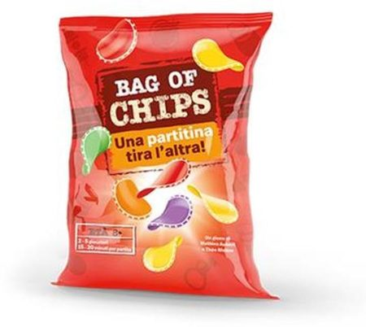
Bag of chips : un gioco
I segnalini sono patatine, e si pescano alla cieca dal sacchetto una alla volta, sperando nel colore giusto. È il gioco da mettere in mezzo al tavolo insieme alle ciotole vere: quello in cui converrebbe fermarsi un attimo prima, e non si ferma mai nessuno. Un quarto d'ora e si è già alla rivincita.
-

Bananagrams : il gioco di parole veloce
Sta dentro un sacchetto di stoffa a forma di banana, e non fa aspettare il turno a nessuno: si rovesciano le lettere e ognuno costruisce il proprio incrocio di parole a testa bassa, più in fretta che può. E se non c'è nessuno con cui giocare, si sfida il cronometro.
-

Bang!
Uno di voi è lo Sceriffo, e lo sa tutto il tavolo. Tutti gli altri no: c'è chi lo deve proteggere senza poterlo dire, chi lo vuole morto, e chi se ne sta in disparte aspettando che gli altri si tolgano di mezzo a vicenda. Da tirare fuori quando siete in tanti e avete voglia di non fidarvi di nessuno.
-
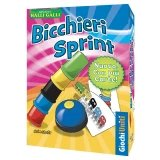
Bicchieri sprint
Una carta mostra l'ordine dei bicchieri e parte la corsa delle mani. Chi finisce per primo suona il campanello — ed è anche il primo a essere controllato, perché arrivare prima non conta niente se un bicchiere è fuori posto. Round da pochi secondi, uno dietro l'altro.
-
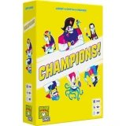
Champions!
Otto concorrenti, veri o immaginari, si sfidano in duelli improbabili decisi dal voto di tutti i giocatori. Indovinare il vincitore conta più della logica: il pubblico ha sempre l'ultima parola.
-
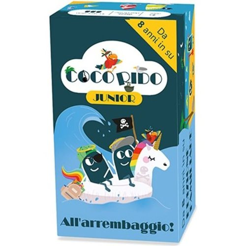
CocoRido All'Arrembaggio
Uno di voi legge una frase a metà, gli altri completano con la carta più assurda che hanno in mano — e chi ha letto decide, a modo suo, quale risposta gli ha strappato la risata più sincera. Chi vince quel turno diventa il prossimo a leggere.
-
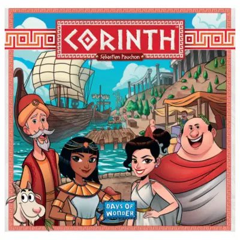
Corinth
Si lanciano nove dadi insieme e si dispongono in fila dal valore più alto al più basso: prendete tutti i dadi di un livello e fate l'azione collegata. Più aspettate a scegliere, più dadi restano — e più forte è la tentazione di rimandare ancora un turno.
-
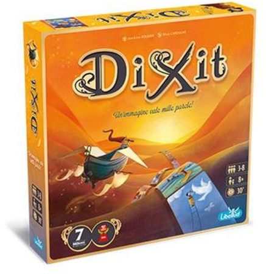
Dixit : un'immagine vale mille parole!
Paesaggi da sogno, personaggi strambi, e nessuna risposta esatta da calcolare: uno dice la sua frase e gli altri provano a capire quale immagine gli sia passata per la testa. Anche i punti stonano apposta — a segnarli non ci sono cubetti, ci sono otto conigli.
-
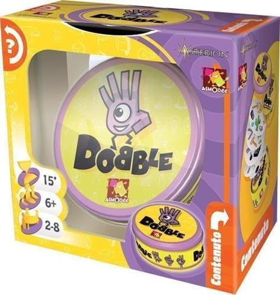
Dobble classic
Tra due carte qualsiasi del mazzo c'è sempre un simbolo in comune, uno solo: è una certezza matematica, e trovarlo prima degli altri è tutto il gioco. Si urla il nome del simbolo e si allunga la mano prima di aver finito di dirlo, per un quarto d'ora di fila.
-
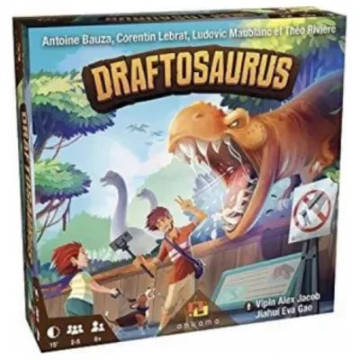
Draftosaurus
A ogni turno qualcuno lancia un dado che decide dove tutti gli altri devono piazzare il proprio dinosauro — tranne chi ha lanciato, che lo mette dove vuole. Un piccolo dispetto a turno, e il vostro zoo dei sogni si scontra ogni volta con la fortuna di chi tira.
-
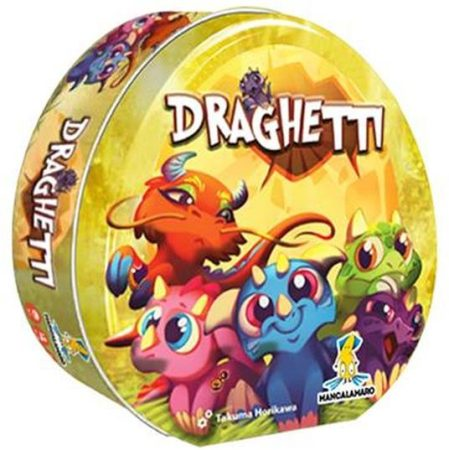
Draghetti : arrivano i draghetti!
Le uova di drago stanno per schiudersi, e sul tavolo ce ne sono quarantasette. Dentro c'è una delle sette specie di draghetti, ognuna con il suo trofeo dorato in palio: per portarselo a casa non basta raccogliere uova, bisogna ricordarsi dove sono finite quelle giuste.
-
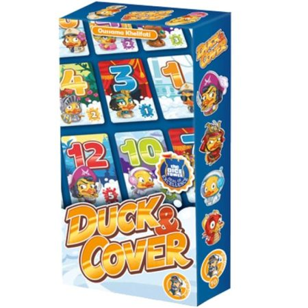
Duck & Cover
Paperelle pirata, paperelle fantasma, paperelle poliziotto, paperelle astronaute: ottantaquattro in tutto, capaci di qualunque cosa tranne una — evitare gli schizzi nella vasca da bagno. Il resto è riconoscere in fretta la propria in mezzo a tutte le altre.
-
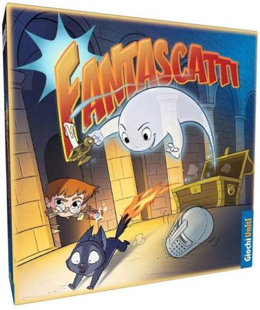
Fantascatti : nuova edizione
Nel vecchio maniero c'è un fantasma dispettoso che sposta le cose apposta per confondervi, e Tommy è arrivato con la macchina fotografica per portarsi a casa uno scatto. Cinque oggetti lì davanti, le mani che partono prima della testa: un quarto d'ora, e seduti fermi non ci si sta.
-
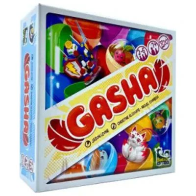
Gasha
Girate la manovella della macchina e sperate che esca proprio il pezzo che vi manca per completare il set — ma non lo scoprite finché non l'avete già preso. Ogni estrazione è un piccolo salto nel buio, esattamente come i distributori a sorpresa a cui il gioco si ispira.
-
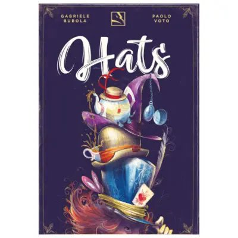
Hats
Ogni turno scambiate un cappello con quelli sul tavolo, cercando di completare la vostra collezione — ma il cappello che vi piace di più conviene proteggerlo, perché vale doppio se resta con voi fino alla fine. Otto turni, tutti a rubarsi i colori a vicenda.
-
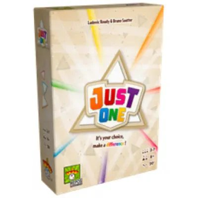
Just one : a te la scelta, fai la differenza!
-
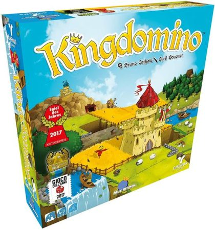
Kingdomino
Costruite il vostro regno componendo tessere a domino di foreste, laghi e campi di grano. Le tessere con più corone valgono di più, ma vi costringono a scegliere per ultimi al turno successivo.
-
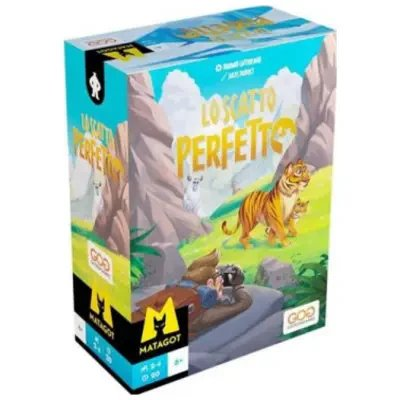
Lo Scatto Perfetto
Sovrapponete carte bucate come fossero l'obiettivo della vostra macchina fotografica, cercando di inquadrare bene l'animale sotto. Chi inquadra lo Yeti nascosto tra le tessere si porta a casa un bonus che nessun altro può più prendere.
-
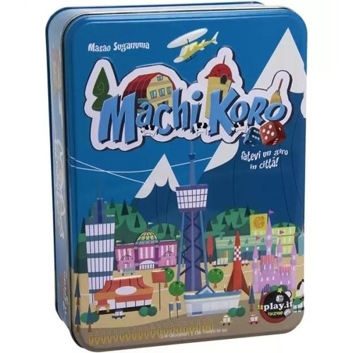
Machi Koro
A ogni turno lanciate i dadi, ma il numero che esce non paga solo voi: alcuni dei vostri edifici incassano anche quando tira l'avversario. Un classico immediato: si capisce in due minuti, e si sorride ogni volta che il dado sbagliato arricchisce l'altro invece di voi.
-
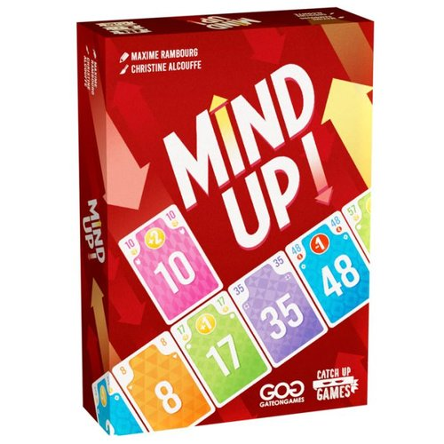
MindUp!
Ogni turno tutti giocano una carta in segreto, poi si scoprono insieme: si forma una fila ordinata dal basso all'alto e ognuno prende la carta della fila precedente nella stessa posizione della propria. Sembra un dettaglio da niente, finché non vi accorgete che la posizione conta più della carta stessa.
-
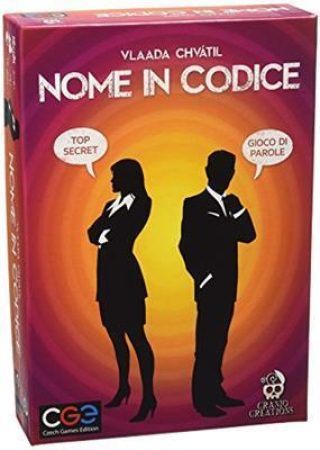
Nome in codice : collega gli indizi
-
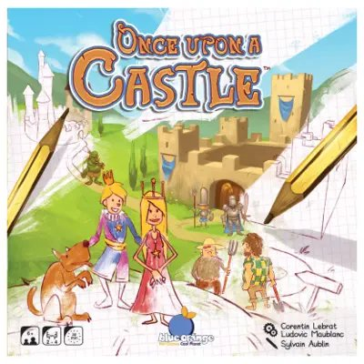
Once Upon a Castle
A ogni turno chi lancia i dadi sceglie per primo cosa prendere, e gli altri si dividono quello che resta. Ognuno disegna il proprio castello su un foglio personale, in gara silenziosa per vedere chi lo finisce meglio.
-

Railroad Ink Blu
Stessa idea di Railroad Ink Rosso: dadi in comune, disegno personale, foglio suo per ciascuno. Qui però a complicarvi la mappa non sono lava e meteore, ma fiumi e laghi da aggirare con le vostre strade.
-

Railroad Ink Rosso
Si lanciano i dadi e tutti, nello stesso momento, disegnano strade e ferrovie sul proprio foglio: stessi dadi per tutti, ma ogni mappa finisce diversa. Le strade che restano a metà, senza uscire dal foglio, vi tolgono punti — e con i dadi Lava e Meteora anche un pezzo di mappa può esplodervi in faccia.
-

Rory's Story cubes. Classic
-

Rory's story cubes. Fantasia
-

Rory's Story cubes. Voyages
-
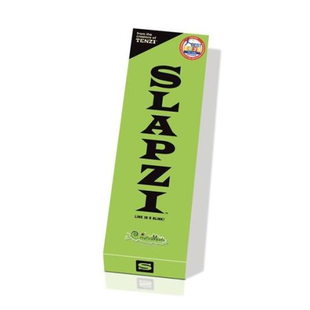
Slapzi : link in a blink!
-
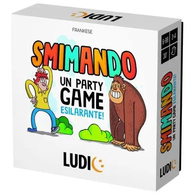
Smimando : un party game esilarante!
-
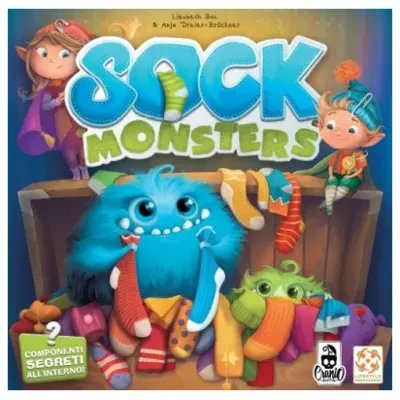
Sock Monsters
Muovete di nascosto il vostro mostro sollevando la pedina: solo dopo scoprite se si è addormentato a metà strada, oppure può ancora rubare un calzino. Poi tocca all'elfo cercare le coppie nascoste tra cassetti e armadietti, prima che i mostri gliele portino via.
-

Speedy word : nomi, cose, citt ...
-
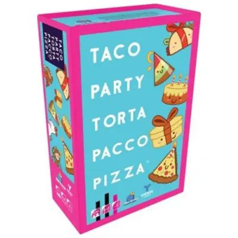
Taco party torta pacco pizza
-
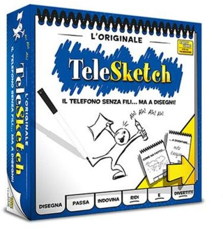
TeleSketch
-
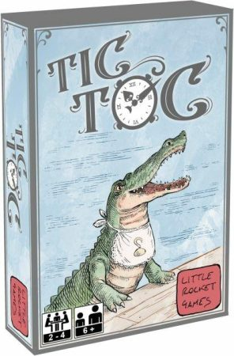
Tic Toc
-
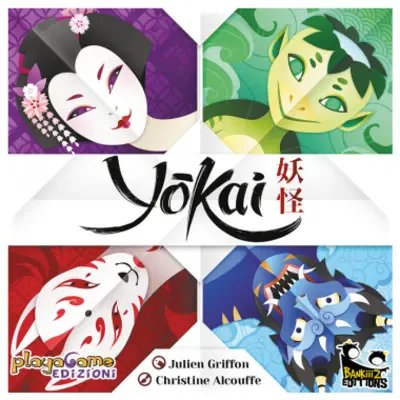
Yokai
Non potete parlarvi. Nemmeno un cenno, nemmeno un'occhiata d'intesa. Dovete rimettere in ordine gli spiriti per colore aiutandovi solo con dei suggerimenti muti — e scoprirete che mettersi d'accordo in silenzio è molto più difficile, e molto più divertente, di quanto sembri.
-
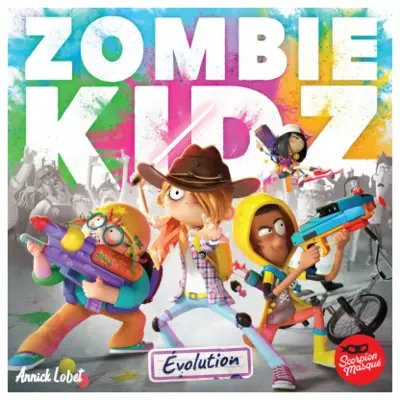
Zombie Kidz Evolution
Difendete la scuola dall'invasione zombie chiudendo le quattro porte prima che i mostri dilaghino tra le aule. Ogni missione superata apre una busta sigillata: il gioco cresce e cambia, partita dopo partita.
-
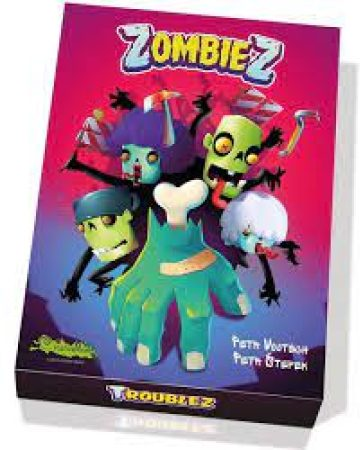
ZombieZ